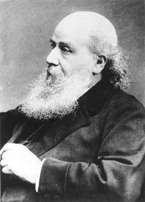

Christian Chávez
Université de Sherbrooke
2026-09-29

James Joseph Sylvester
1893 : pose le problème
Tibor Gallai
1944 : première preuve
« On n'est pas obligé de croire en Dieu, mais on devrait croire au Livre. »
: Paul Erdős
Parmi les couples $(P,\ell)$ avec $\ell$ connectrice et $P \notin \ell$, choisir $(P_0,\ell_0)$ de distance minimale.
Affirmation : $\ell_0$ est ordinaire.
graphe plan : dessiné sans que deux arêtes se croisent
faces : régions délimitées par le dessin, extérieure comprise
simple : sans boucle ni arête multiple degré d'un sommet : nombre d'arêtes qui y aboutissent